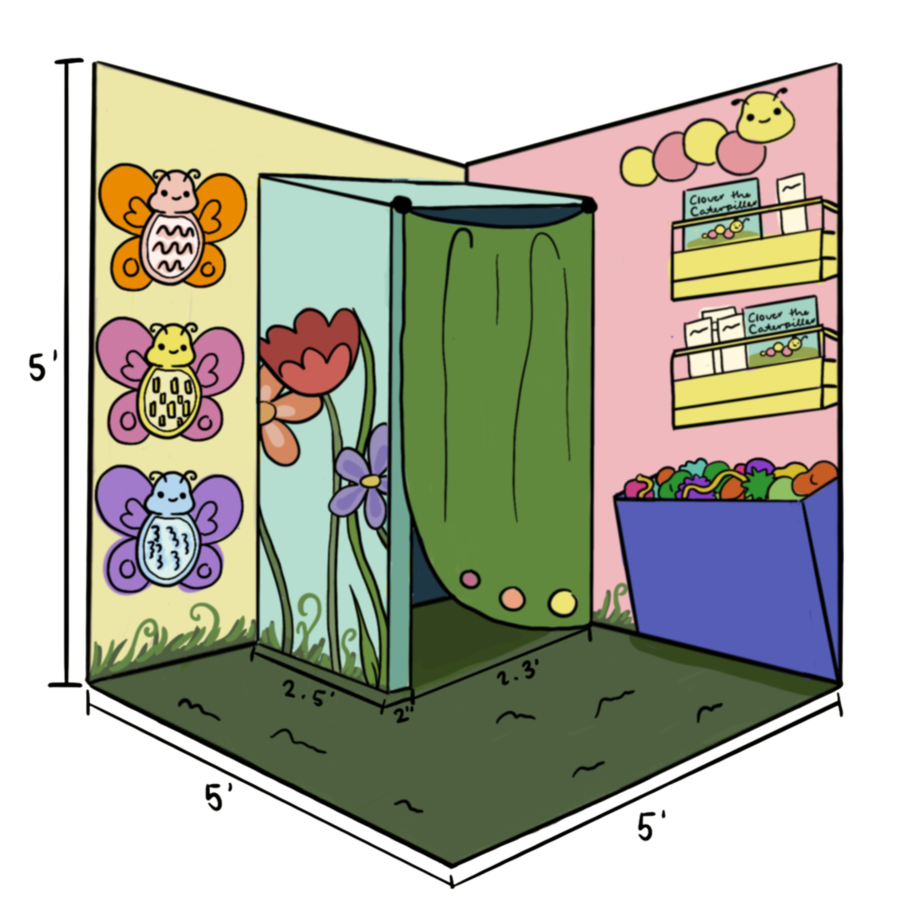

Sensory Spaces
Cozy, caterpillar-themed retreats where every kind of mind can reset, recharge, and belong.
A Calm Corner in Every Classroom
Cocoon Corners are small, intentional spaces tucked into school classrooms, libraries, and community rooms. Inspired by the safety and transformation of a caterpillar's cocoon, each corner is designed to give children aged 5–12 a quiet place to decompress when the world feels like too much.
These spaces are for everyone — not just neurodivergent children. Any child who needs a moment to breathe, fidget, read, or simply be still is welcome. The goal is to normalize calm and make inclusion feel natural.

What a Sensory Space Can Look Like


Photo credits: reference images sourced from published research and educational design resources. Final Cocoon Corner builds will be photographed and added here.
Key Principles for Every Cocoon Corner
A Quiet, Portable Retreat Zone
Every corner should include a calm, cocoon-like area where a child can withdraw from overstimulating environments without drawing attention to themselves. These preferably also offer soft lighting with less distraction.
Fidgets, Sensory Tools, and More
Stock the space with a variety of tactile objects such as stress balls, fidget spinners, textured fabric, and sensory boards so that kids have something to focus their hands and energy on. Also consider using soft, washable fabrics as cushions and curtains.
Reading Material and Activities
Include our storybooks and educational pamphlets so children have something engaging to explore. Quiet activities reduce restlessness and build positive associations with the space. For inclusivity, make sure to also have dyslexia-friendly materials.
Open to All
The Cocoon Corner is not meant to be a special-needs room, but rather, a space that any child can use. Framing it this way removes stigma and makes the space truly inclusive.
What to Put in Your Cocoon Corner
These are the recommended items based on evidence-based sensory room research and our own design testing. You don't need all of them — start small and build from there.
The Build Process
To set up a Cocoon Corner, the same general process may be followed. Here's our process:
Step 1 - Pick a Spot and Gather Your Items
The spot should ideally be away from bright lights and be away from the sounds of the classroom (like in a corner). For the items you include, try to include many tactile objects like fidget toys, slime, shakers, and more. Learn more about them in the downloadable file (see below).
Step 2 - Add Soft Seating Options
Include soft seating options such as bean bags chairs, weighted lap pads, or egg chairs. Add the tactile items you chose earlier around them.
Step 3 - Manage the Sounds
Cover the cocoon with blankets, rugs, or other such items to keep out sound and create a more calm, relaxed atmosphere. Alternatively (or in addition), provide noise-canceling headphones or a white noise machine.
Progress and Reach
Our primary goal is to just increase our reach in areas we're in; currently, we are focusing on FUSD, and hope to expand to neighboring districts soon.
Want to Build a Cocoon Corner?
Learn more by downloading our step-by-step guide for the process in addition to tutorials and tips and tricks!